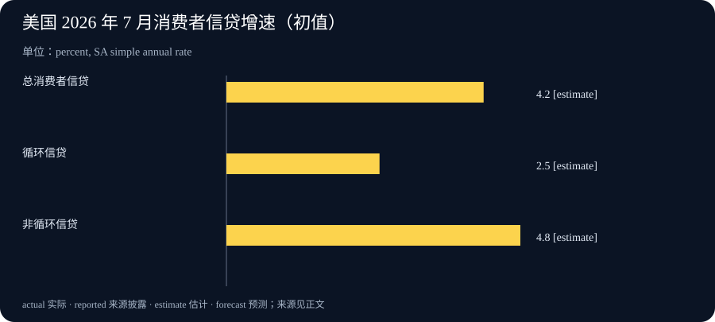

Daily Intelligence
2026-09-09 · Wednesday · 补刊：收录 9 月 8 日公布并在本次检索中核实的信息。部分公司公告未标注时分，无法精确复原早间截点。
Today’s Thesis｜生成变便宜之后，真正稀缺的是可以交付的结果
图像工具改善多轮编辑，可能把创作成本从反复重做转向明确需求与验收；平台强调计算效率，也把商业竞争推向每项完成工作的总成本。与此同时，美国消费者信贷仍在扩张，但借款增长并不直接证明消费能力增强。本期的共同问题是：当数量更容易增长，如何分辨新增使用、有效成果和可持续收入？以下事实来自公告或官方统计，机制分析与行动建议为本刊推演。
Executive Summary｜执行摘要
- OpenAI 于 9 月 8 日发布 Images 2.5，称其改善局部修改与多轮一致性，生成延迟相较前代最多降低一半；这一上限属于供应商披露，不能当作所有任务的平均提速。产品公告
- 同日公司文章称生产服务软件优化使端到端服务成本下降 20%。这是平台内部成本口径，不能直接等同于客户价格下降、利润增长或每项业务成本下降。公司披露
- 美联储 9 月 8 日发布的 7 月消费者信贷初值显示，总量、循环与非循环信贷的季调简单年化增速分别为 4.2%、2.5%、4.8%；这些不是同比增速。官方统计
- 决策重点：为创意生产同时记录验收率、返工时间和完整成本；为消费判断同时观察收入、债务负担和实际销售。单一数量指标不足以承担投资结论。
AI Daily｜多轮编辑的价值，取决于没有被要求修改的部分能否保留
此次产品公告将参考图保真、精准编辑和多轮一致性列为改进方向，并介绍草图、模板、图上评论与提示分享功能。产品公告 这些变化值得观察，因为实际创作通常不是一次提示后立即采用：客户会要求改文字、改背景、改比例，同时保留人物、商品和品牌元素。生成能力只有接上这种修订过程，才可能进入稳定的交付。
本刊建议把编辑测试分为两组。第一组检查目标变化是否实现，例如修改指定区域的颜色或文案；第二组检查非目标区域是否保持，例如商品轮廓、标识、布局和尺寸。两组应同时通过。只评价“新图是否更好看”，容易漏掉隐蔽的商品失真，也会让团队无法解释为什么某张视觉效果不错的图仍不能上线。
多轮测试还应固定起始图片、任务顺序和验收条件。若每轮都更换参考材料，就难以判断质量变化来自模型、提示还是素材。可以保留一个简单版本表：输入、修改请求、输出、通过项、失败项、人工修复时间。对商业图片，产品信息和使用权由负责人核对；模型生成的外观并不证明现实商品具有对应功能。
速度测试也要覆盖完整流程。一次生成等待缩短，可能被挑选候选、核对细节、修复文字和导出规格的时间抵消。实际试点应从收到需求开始计时，到可交付文件被接受为止，并记录失败尝试。这样既能识别真正节省的环节，也能发现瓶颈是否已经转移到审批和沟通。
对小团队来说，先统一需求模板往往比扩充大量提示更容易评估。模板至少写清用途、画幅、必须保留的信息、允许变化的区域和禁止出现的内容。一次只改变一个关键变量，才能判断哪项改进值得保留。如果业务需求本身不断变化，工具再快，也可能只是在加快往返修改。
Business Daily｜平台成本下降，客户仍要核算自己的交付成本
OpenAI 的商业文章把模型研究、产品触达和计算效率描述为相互支持的增长路径，并强调按照可服务的需求和资本回报评估投资。公司披露 这是公司的战略解释，尚不能单独证明客户收益、竞争壁垒或未来回报。采购者需要把平台叙事翻译成可在自己流程里测量的指标。
一个实用账本是：工具费用，加上需求整理、人工检查、返工、系统接入和维护成本，再除以验收通过的成果数。这个分母很关键。如果单次生成费用下降，但为每件合格素材尝试的次数增加，总成本未必下降。比较两个工具时，应使用同一批任务和同一套评分，避免把简单任务留给新工具、困难任务留给旧流程。
合同和组织分工也会影响收益归属。工具节省了设计制作时间，不代表项目负责人、法务或客户的等待时间同步下降。团队可以分别记录主动工作时间与排队时间，再决定改善哪一段。若审批等待占据大部分周期，增加生成速度主要扩大待审队列，甚至让审阅者更难集中注意力。
商业化的另一个假设是更便宜的制作能支持此前不值得做的细分需求，例如小批量、本地化或多语言素材。这需要用新增订单、付费意愿和毛利验证。不能仅凭产量增加认定市场已经扩大：免费试用、内部试验和重复修改都能推高用量，却未必形成新增收入。
因此，本刊建议用小规模、可撤回的试点替代一次性扩张。先选择需求稳定、错误容易发现的工作，设定总预算和停止条件；通过后再扩大。若真实成本下降但利润没有改善，继续检查价格竞争、获客成本和使用频率。效率提升如何转化为利润，需要业务证据来回答。
Macro Observation｜借款扩张可以对应不同的家庭处境
G.19 覆盖大部分个人信贷，但不包括房地产担保贷款；非循环信贷包括汽车、教育等贷款。7 月为初值，历史数据也有修订；表中的增长率由未四舍五入数据计算，并作简单年化处理。统计定义与初值 因而不能把这一指标当作完整家庭债务，也不能把年化增长直接理解成当月收入或消费增长。
从机制看，借款增加至少存在几种竞争解释：家庭对未来收入更有信心、为大额消费平滑支出、名义价格提高了融资需求，或现金流紧张导致更多借贷。这些解释可能同时存在。仅凭信贷总量无法确定哪一种占主导，应结合实际收入、偿债支出、拖欠情况和零售活动进行判断。
对面向消费者的企业，需求预测应区分销售额、销量和付款方式。促销或分期安排可以改变交易时点，而没有创造同等规模的长期购买力。若收入增长依赖延长账期，财务团队还需要观察回款和坏账；订单增加与现金改善之间存在时间差，不能用同一个指标替代。
对 AI 服务商和采用 AI 的企业，宏观数据的作用是约束假设。更低的制作成本可能提高供应能力，但客户预算决定实际需求。压力测试可以分别模拟价格下降、订单不变和回款延后，观察项目是否仍有现金余量。这里讨论的是经营情景，不是从美国单月信贷数据推导其他市场的确定结论。
Signal Dashboard｜信号仪表盘
| 信号 | 当前证据 | 不能推出什么 | 下一验证 |
|---|---|---|---|
| 图像局部修改与一致性改进 | 产品供应商公告 | 所有任务稳定通过 | 固定参考图的多轮对照 |
| 平台服务成本优化 | 公司内部披露 | 客户自动获得同等降本 | 每件合格成果完整成本 |
| 消费者信贷继续扩张 | 官方月度初值 | 家庭购买力全面改善 | 收入、偿债与拖欠数据 |
| 制作数量更容易增加 | 本刊经营假设 | 新增付费需求成立 | 新订单、复购和毛利 |
| 审阅成为瓶颈 | 待业务实测 | 所有团队都需要增员 | 队列长度与主动审阅时间 |
Deep Insight｜提高吞吐量之前，先确定什么才算完成
生成工具改变了“做出一个候选”的成本，却没有替团队决定“什么可以交付”。这两个动作之间的距离，常常藏在口头需求、隐含经验和临时审批里。以前制作慢，问题可能被人工沟通吸收；当候选数量快速增加，原本没有写清的规则就会以返工、争议和排队的形式暴露。由此推演，采用 AI 的第一项组织投资应包括验收标准，而不只是账户和培训。
验收标准也不能只是一张越来越长的清单。它需要围绕真实用途建立层次：有些错误直接禁止发布，有些影响可读性或品牌表现，有些只是个人偏好。将这些层次混在一起，会让每一次反馈都像同样严重，导致团队无法权衡时间和价值。负责人应预先约定哪些项目必须通过，哪些可以在后续版本优化，并保留争议的裁决路径。
第二个问题是成本归属。设计师节省半小时，而项目经理多花半小时挑图，组织总体可能没有节省时间；平台减少计算成本，而客户增加审阅步骤，也未必提高客户收益。因此，评估单位应覆盖从需求进入到成果被接受的全过程。不同岗位的时间不能凭感受估计，应在小样本试点中连续记录，再根据任务类型分别讨论。
第三个问题是新增需求。效率提高会使一些过去放弃的工作变得可行，这是值得检验的机会，但同时也可能鼓励没有明确受众的产出。团队需要区分“原有任务更便宜”和“新任务产生额外价值”。前者可用成本对照检验，后者需要观察使用、转化或收入。若只统计素材数量，就会把这两类结果混为一个增长故事。
消费者信贷提醒我们，数量变化的意义依赖其背后的约束。借款增加可以缓冲短期支出，也可能增加未来偿债压力；生成次数增加可以扩大实验，也可能积累审阅负担。两者并不存在由本期数据证明的因果关系，但都适合用存量与流量的区分来分析：今天进入系统的工作，是否形成了明天必须处理的负担？
实际管理可以设置两道阈值。第一道控制进入队列的任务，要求明确用途、输入和负责人；第二道控制交付，要求关键事实、规格和成本满足标准。两道阈值之间允许快速试验，失败则记录原因并停止扩散。这样可以把创新空间与最终责任连接起来，也减少无效候选挤占有限的审阅时间。
上述判断可以被证伪。如果引入工具后，完整周期显著缩短、合格率不降、总成本下降，而且新增需求形成了持续付费，那么扩张具有更强依据；若只有生成数量增加，返工、等待和投诉同时上升，则应收缩试点并修订流程。可靠的商业判断应允许两种结果出现，而不是预先把采用本身定义为成功。
Tomorrow Watch｜明日观察
- 选择同一批真实素材需求，对比生成时间、审阅时间与最终验收率，保存失败样本。
- 将新增试验与原有任务分开统计，观察是否产生新增使用或付费，而不只增加文件。
- 对消费者需求保留多种解释，等待收入、偿债和实际销售证据交叉验证。
One Chart｜一图

图表并列 7 月总消费者信贷及两类分项的季调简单年化增速。总量是加权结果，分项增速不能直接相加；初值可能修订，也不能据此识别具体家庭的财务状况。图表来源
Quote of the Day｜每日一句
“It is easier to write an incorrect program than understand a correct one.” — Alan J. Perlis
“写出一个错误的程序，比理解一个正确的程序更容易。”耶鲁大学托管的 Perlis 编程箴言第七条提醒我们：产出容易观察，理解需要投入。将它用于今天的创作流程，意味着给检查、解释和验收保留真实时间。原始出处
Action Items｜行动项
- 为一类高频创意任务写出必须保留、允许修改和禁止出现的内容，并指定最终验收人。
- 建立每件合格成果的成本记录，包含生成、人工审阅、返工和维护。
- 给试点设置预算、样本数与停止条件，依据实际结果决定扩大或收缩。
- 经营预测分别列出销量、价格、回款与融资条件，避免单一增长数字掩盖约束。